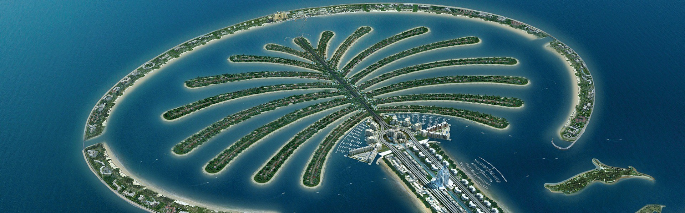

Our journey to Dubai began with a visit to the iconic Burj Khalifa. The views from the observation deck were breathtaking, and we captured some amazing photos of the city.
At 828m tall, this magnificent structure is located next to Dubai Mall and has drawn visitors from all over the world since opening in 2010. The unmatched Burj Khalifa view can be taken in from not one but two observations decks the two-storey At the Top on the 124th and 125th floors, as well as one of the worlds highest observation decks (555m) on the 148th floor.
To Book tickets for the Burj Khalifa:
tickets more info
Story 2: Sunsets at Palm Jumeirah
Dubai is famous for its soaring skyline and thats not the only feat of engineering to capture the worlds imagination. Built from reclaimed land in a series of artificial archipelagos, Palm Jumeirah is shaped like a palm tree when viewed from above.
The unique island is home to some of Dubai is top luxury resorts, including Atlantis, The Palm, FIVE Palm Jumeirah Hotel, Jumeirah Zabeel Saray, One&Only The Palm and many more.
Things to do here:

Story 3:Burj Al Arab
Burj Al Arab Jumeirah is undoubtedly one of the most famous landmarks and tourist attractions in Dubai, and is renowned for its 'seven-star status'. The luxury record-breaking all-suite hotel includes a range of fine-dining restaurants, incredible beaches and the expansive Burj Al Arab Terrace.
Things to do:
The Dubai Frame is one of the city’s most famous attractions for visitors and residents alike. Much like the Burj Khalifa and Burj Al Arab's iconic structures, the building's landmark location in Zabeel Park provides panoramic views of the city.
At 150m tall and 93m wide with a bridge connecting the two towers, Dubai Frame has a unique concept to its structure. Resembling a picture frame, Dubai's historic district can be seen to the north while the south provides breathtaking vistas of the modern cityscape.
Things to do :
Beyond the stunning views, visitors can experience the past, present and future from the ground to the sky. For example, the story of the city’s past is told using the latest technology, combining animations and holographic effects with traditional music and aromatic scents to transport visitors back in time.
Step onto the clear 50m-long opaque glass bridge at the Sky Deck. Crafted from liquid crystal with an underlying film triggered by sensors, the floor becomes clear only when a visitor walks over it. Peer at the ground beneath, all while feeling like you’re walking on air.
For more info
Story 5:Museum of Future
A gateway to the world 50 years from now, the landmark development will contribute to a better humanity and stronger global economy by demonstrating how next-generation solutions – incorporating everything from artificial intelligence to augmented reality – can enhance our lives. The main museum experience is split into five chapters:
OSS Hope: experience life on a space station, 600km above the Earth.
The Heal Institute: an augmented- and virtual-reality view of Dubai and the world in 2071.
Al Waha: "The Oasis" offers soothing experiences and a Sensory Room.
Tomorrow Today: Learn about the futuristic technologies that already exists today.
Future Heroes: an interactive play-space designed to inspire children through missions and games.
Visitors will have the chance to engage with this game-changing technology. Each floor of the museum is designed like an expansive, interactive movie set, brought to life by expert storytellers, technologists and visionary artists. Topics in focus include the future of space travel and living, climate change and ecology, health, wellness and spirituality.